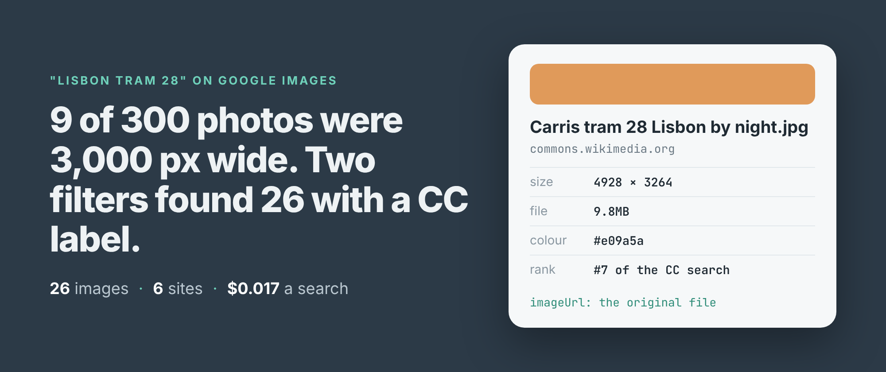
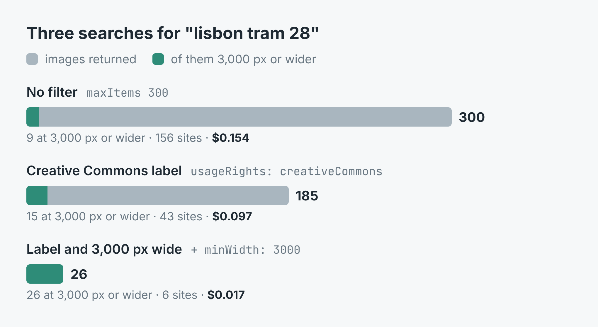
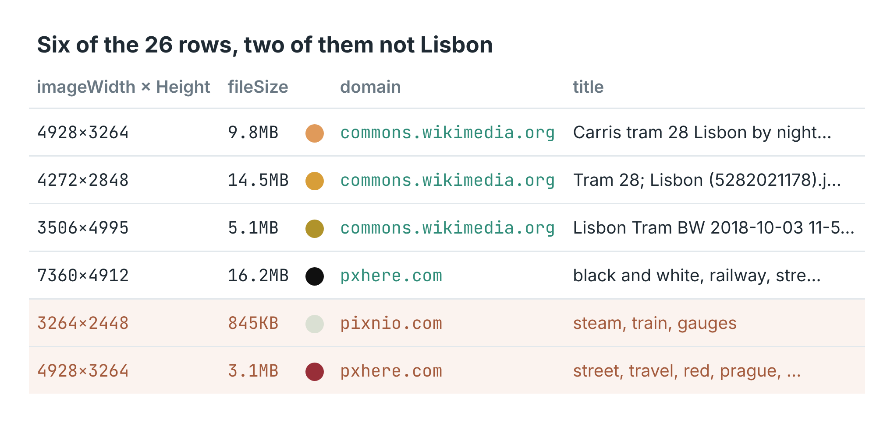

How to find Creative Commons photos big enough to print (26 of Lisbon's Tram 28)
I wrote this with an AI assistant. The runs, numbers and code are real, and I checked them.

26 photos of Lisbon's Tram 28, every one at least 3,000 pixels wide, every one carrying Google's Creative Commons label. One search, four requests to Google, 1.7 cents. That's what I ended up with. The way there is worth showing, because the obvious search gets almost none of them.
3,000 pixels is about 25 cm across at 300 dots per inch, which is what a printer wants for a decent-sized print. Most of what Google Images shows you is nowhere near it.
The plain search
I build and run a Google Images scraper on Apify. It returns each result as a row: the full-size image address on the site that hosts it, its width and height as Google states them, the page it sits on, the site's name, the file size and the dominant colour.
First I asked it for 300 results for "lisbon tram 28" with no filters at all. They came from 156 different sites, and the median width was 1,024 pixels. Only 9 of the 300 were 3,000 pixels wide or more, and nothing in a plain search says which of them anyone may reuse.
Two settings
The fix is two settings. usageRights: 'creativeCommons' asks Google for its Creative Commons filter, the same one under Tools in the Images tab. minWidth: 3000 drops every image narrower than that. Google's own Size filter has only large, medium and icon, so the floor is applied to each row's stated width after Google has answered.
import { ApifyClient } from 'apify-client';
const client = new ApifyClient({ token: process.env.APIFY_TOKEN });
const run = await client.actor('simple.actor/google-images').call({
queries: ['lisbon tram 28'],
usageRights: 'creativeCommons',
minWidth: 3000,
});
const { items } = await client
.dataset(run.defaultDatasetId).listItems();
for (const r of items) console.log(r.imageWidth, r.pageUrl);
The full script, which writes a CSV, and a Python version are in the repo.

Three runs of the same search. Grey is every image returned, teal the ones 3,000 px or wider.With the label alone, Google had 185 images, from 43 sites, and stopped there. Only 2 of them had been among the 300 unfiltered ones. The label doesn't trim the plain results, it brings back a different set, mostly from photo libraries and Wikimedia Commons. The median width was still 1,024, and 15 of the 185 were 3,000 pixels or wider.
With the label and the floor together, the run read 4 pages from Google and kept 26 images from 6 sites: 13 from pxhere.com, 8 from Wikimedia Commons. The widest was 7,360 by 4,912. It took 107 seconds.

Six of the 26 rows. The last two passed both filters and aren't Lisbon.The imageUrl on each row is the original file, not Google's thumbnail. The Wikimedia ones point straight at upload.wikimedia.org, at 1.8 to 14.5 MB a file. pageUrl is the page the image sits on, which is where the licence is.
What it cost
The listing charges $0.0005 per image, $0.004 for each search that returned images, and $0.00005 for the run start, with Apify's platform costs included. A search Google has no images for isn't charged.
The 26-image run came to 26 × $0.0005 + $0.004 + $0.00005 = $0.017. The 185-image run was $0.097, and the 300 unfiltered images $0.154. Narrower is cheaper, because you pay for the images you keep, not the pages read to find them.
Where it went wrong
Three of the 26 aren't Lisbon. One is an Instagram post about Porto. One is a red tram in Prague. One is a close-up of a steam train's gauges. 16 of the 26 titles name Lisbon or Tram 28. The other 10 are a photo library's keyword lists ("tram, cable car, public transport") or say nothing at all, like the two from WordPress's photo directory, so I had to open them to tell.
The Creative Commons label is Google's, not a licence. The Instagram post is the clearest case: I'd want to see that licence written down before using it. Every row carries pageUrl so you can check, and you should, image by image.
The same search doesn't come back the same twice. My first run with the label had 15 images 3,000 pixels wide. The run with the floor, a few minutes later, found 26, and only 15 of those had been in the first run. Google's first page alone came back with 50 images in one run and 100 in another. If you need everything, run it again and merge on imageId, which is Google's own ID for the image.
And a high floor stops early on purpose. Each page from Google costs the same however many images pass, so with a floor set the search only goes on while it keeps at least 7 images for every page read. At 3,000 pixels this search kept 26 in 4 pages and ended on its own, short of the 100 the input allowed.
The code is in simple-actor/google-images-scraper, in Node and Python. Both take a search on the command line and write a CSV with one row per image. The scraper is Google Images Scraper on Apify. Put in your own subject, your town or your product, set MIN_WIDTH to what your print or your page needs, and keep LICENCE=cc if you mean to reuse what you find.